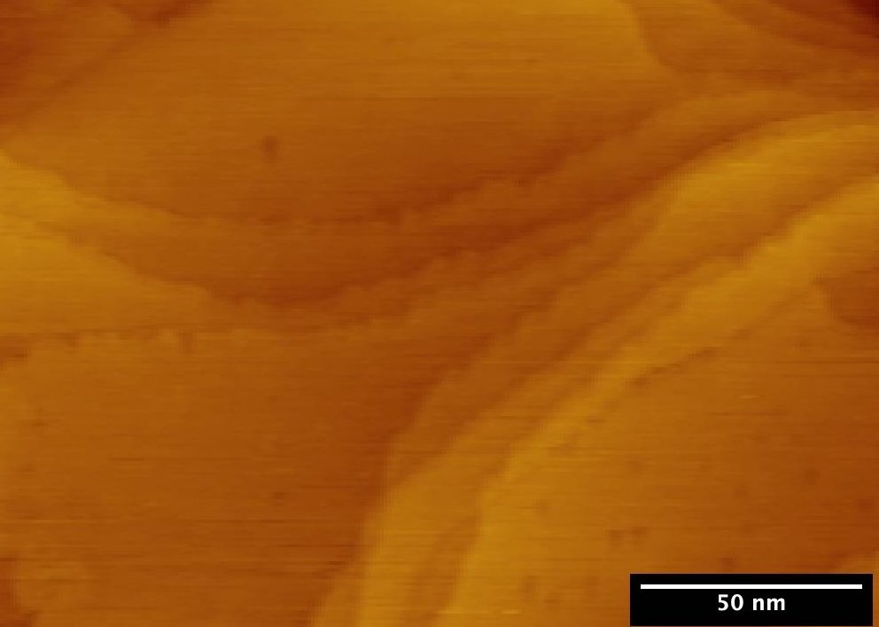
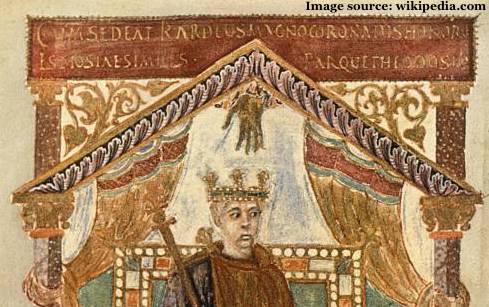
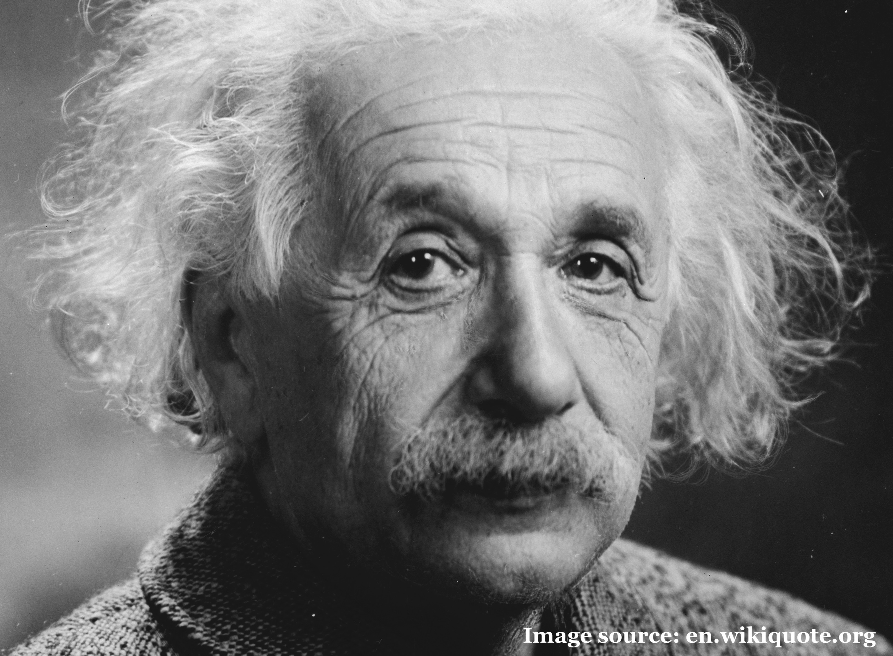
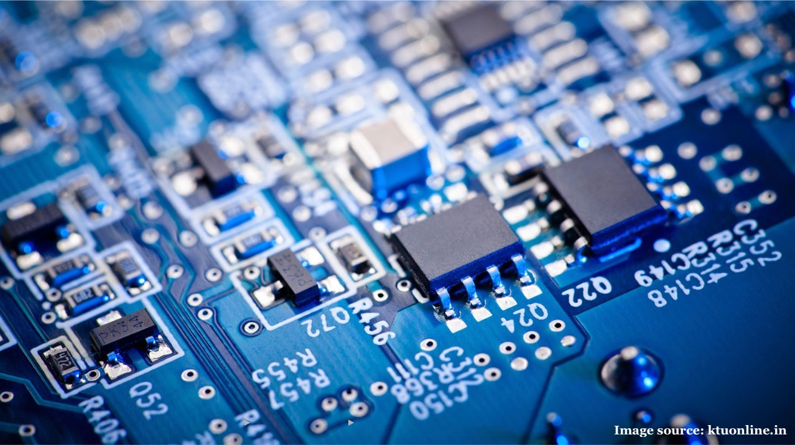
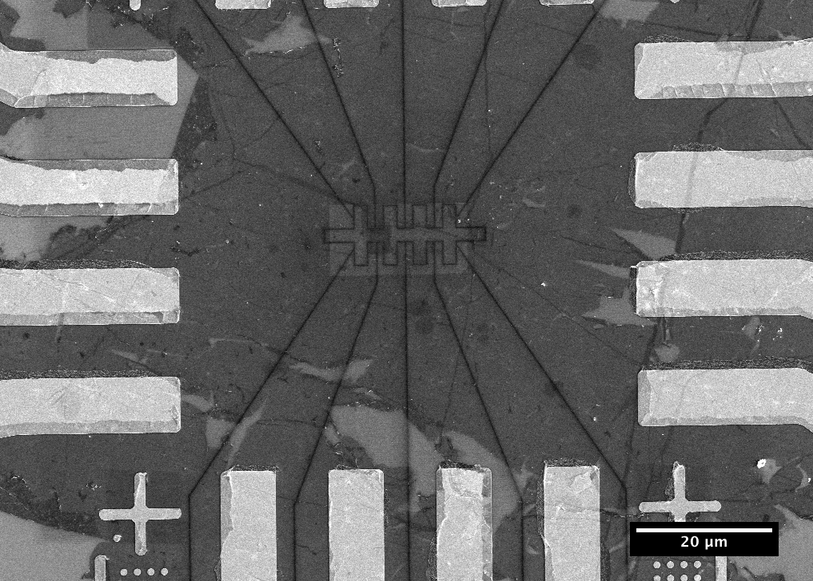
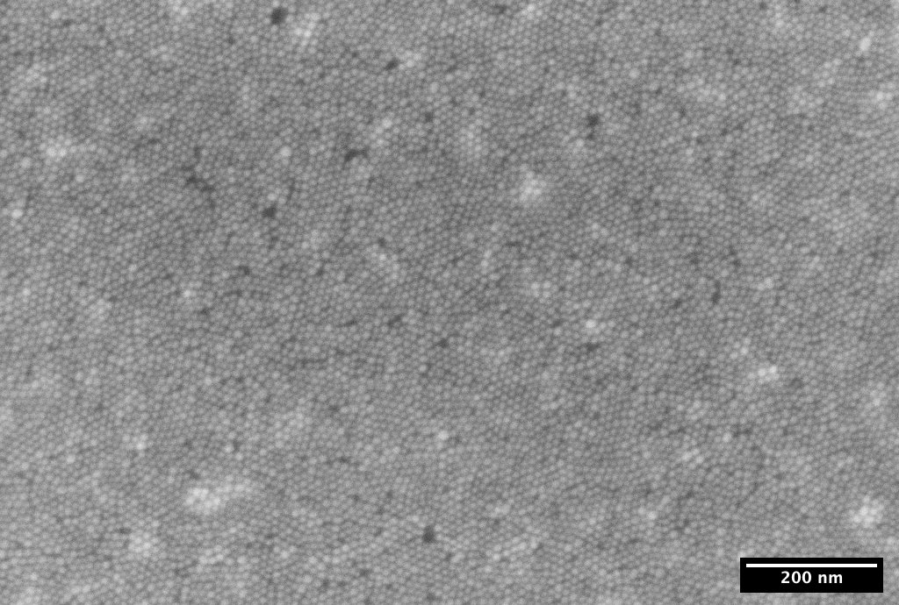
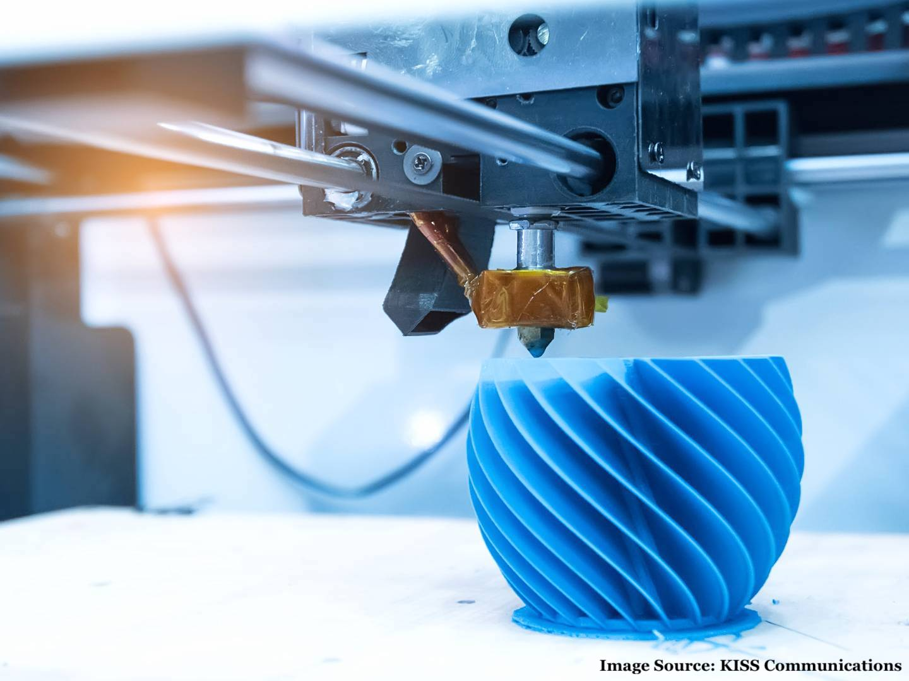
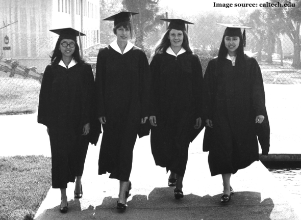
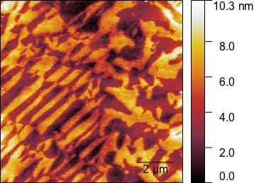
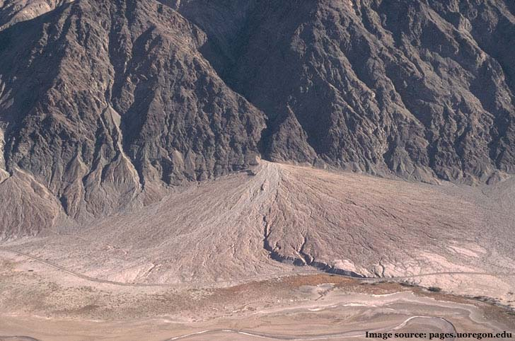

Over the years, I have had a very wide variety of research and work experiences. From geology research to work-study with the Einstein Papers Project, I take advantage of every opportunity I have to indulge my diverse interests. Click on the experiences below to learn more about them:

Though cut short by the Coronavirus pandemic, this project aimed to invesigate the physical structure, energy levels, and quantum confinement of a variety of nanoparticle quantum dots using Scanning Tunnelling Microscopy and Spectroscopy (STM and STS).

This senior thesis project asked whether the Carolingian ruler Charles the Bald was physically bald. The thesis discusses the importance of hair and epithets and how they contributed to public image in the Carolingian era. The full text and abstract can be found here:
entry in CaltechTHESIS
This REU at the Rochester Institute of Technology used imaging science to study manuscripts. Using ENVI Software, I used image processing techniques such as Principle and Independent Components Analysis (PCA and ICA) to reveal, erased, damaged, and hidden text. I also developed a simple non-destructive method to date parchment using relfectance spectroscopy.

This work-study position included a variety of clerical tasks including the physical and electronic organization of resources, work with the ALEPH caltaloguing system, and the transcription of Einstein's handwritten work, among others.

After taking the class myself, I served as an undergraduate TA for Ph 5. The job included attending weekly classes and troubleshooting students' construction of electronic circuits involving basic electronic components, such as resistors, operational amplifiers, and a variety of analog integrated circuits (ICs).

This Summer Undergraduate Research Fellowship (SURF) in the Kavli Nanoscience Institute Cleanroom at Caltech involved using a He-Ne-Ga Ion Beam Milling System to pattern hall bar devices in graphene. The milling quality was evaluated with SEM and AFM and improved by using a novel tilting method that I created.

During the academic year, I worked with a graduate student to create and characterize ordered self-assembled arrays of magnetic nanoparticles. The end goal of the project, though never carried out, was to use the films to induce magnetism and break the inversion symmetry of 2D Transition Metal Dichalcogenides.

Starting in my sophomore year, I worked for the 3D printing lab located in the Caltech library. The job involved training students who wished to use the printers and troubleshooting issues that arose during their operation.

Using materials from the Caltech Archives, I investigated the introduction of female undergraduates to Caltech in 1970. I considered both the administrative decision-making process and the experiences of early female students.

This Summer Undergraduate Research Fellowship (SURF) at Cornell sought to improve the quality of multiferroic thin films grown with Molecular Beam Epitaxy (MBE). The crystal quality was evaluated with AFM, X-ray Diffraction, and Vibrating Sample Magnetometry. Information about the structural quality and strength of the ferroelectric and ferromagnetic properties of various samples helped suggest optimal growth conditions.

This short research project used python to plot and analyze the emission spectra of rock samples from alluvial fans. The emission spectra of the rocks indicated their mineral composition.